1. Abstract
This report explores supervised and unsupervised learning techniques applied to a labelled biological dataset and a bootstrapped simulated version. Logistic Regression, Random Forest, SVM, and Naïve Bayes were used to predict class labels under three feature strategies: all variables, and PCA-reduced data for 5 and 12 features. Random Forest achieved the best performance overall (9.8% error on original data), and 0% error on the bootstrapped dataset. The simulated data was generated using stratified sampling within class labels, preserving both balance and distributions. Clustering analysis (K-means and hierarchical) revealed moderate alignment with true labels, especially using PCA or handpicked features. These findings underscore the value of dimensionality reduction, robust classifiers, and bootstrap validation in multiclass settings. Overall, the analysis highlights trade-offs between interpretability and accuracy, and demonstrates generalisability across both real and simulated data.
2. Introduction
This project investigates a multi-class biological dataset using advanced statistical methods, with the aim of assessing class separability, uncovering latent structure, and evaluating robustness through simulation.
Exploratory Data Analysis (EDA) revealed non-normality, skewed distributions, outliers, and multicollinearity. While some skew was visually apparent, formal skewness testing and outlier detection confirmed distortions that motivated dimensionality reduction across specific features. Logarithmic transformation (log1p()) was applied to highly skewed variables to stabilise variance and reduce distortion in PCA, and data was normalised using scale() to ensure equal feature contribution in distance-based methods. Principal Component Analysis (PCA) was then performed on the scaled data, with component selection guided by scree plots and parallel analysis to ensure optimal variance retention. Varimax rotation was applied post-PCA to improve interpretability of component loadings by maximising loading variance across components. Three main feature strategies were defined: the full feature set, the top 5 PCA components (~49% variance), and the top 12 components (~82%), plus a handpicked set of 7 features that was later only used during unsupervised learning.
Four supervised classification models - Logistic Regression, Random Forest, Support Vector Machines, and Naïve Bayes - were used to predict class labels under each strategy. Model performance was assessed using misclassification rates and confusion matrices. To evaluate robustness and generalisability, a bootstrapped version of the dataset was generated using stratified sampling. Analyses on this simulated data demonstrated high consistency with the original, reinforcing the reliability of key findings. Additionally, unsupervised learning techniques (K-means and hierarchical clustering) were used to explore latent structure without label information, further validating dimensional separability in both real and simulated data.
3. Methods
3.1 Dataset
The dataset comprises 3,000 observations across 20 continuous biological features (X1–X20) and one categorical target variable (label: A–D). Class balance was broadly even. Initial exploration revealed 20 missing values, moderate feature skew, outliers, and intercorrelations indicative of underlying latent structure.
3.2 Missing Data
Less than 0.04% of entries were missing, each affecting only a single column per row. Before selecting an imputation strategy, I first examined the missing data to inform an appropriate handling strategy by checking its potential importance and structural positioning within the dataset. Little’s MCAR test (Little, 1988) was initially attempted to check if the missing values could be MCAR (Missing Completely At Random), but could not be reliably applied due to the highly sparse, unstructured pattern. Instead, I used visual inspection via the MICE package (Figure 1) (van Buuren and Groothuis-Oudshoorn, 2011) and Mahalanobis distance checks (Figure 2) (Mahalanobis, 1936) which suggested the missingness mechanism was likely MCAR or MAR. To further assess whether these incomplete cases could distort the underlying data structure, I used an adaptive Mahalanobis approach (Figure 2) to estimate distance for incomplete rows using only observed values. A PCA projection (Figure 3) highlighted these rows against the complete-case distribution, confirming that they were embedded within the main data cloud and not clear outliers. One exception - a case that exhibited a high Mahalanobis distance (~41) - was retained, as its removal risked discarding potentially meaningful biological variation.
Based on this evidence, deletion was ruled out, despite the small percentage of missing data, because it would have disproportionately reduced class-stratified sample sizes and potentially removed biologically meaningful variation. This aligns with the recommendation from Rubin (1976), who cautioned against deletion in cases where missingness is plausibly MCAR or MAR and when structural data preservation is critical. Instead, label-wise mean imputation was chosen to retain all observations while minimising disruption to class boundaries in supervised models. Each missing value was replaced with the mean of that feature calculated within its respective class.
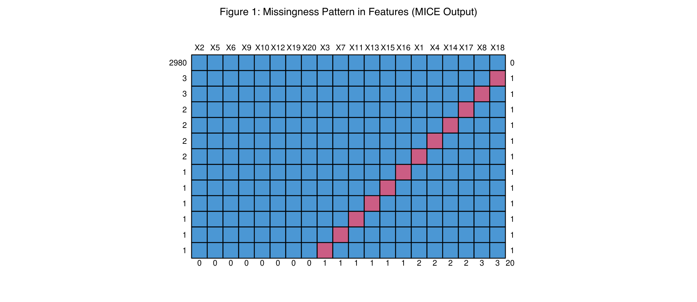
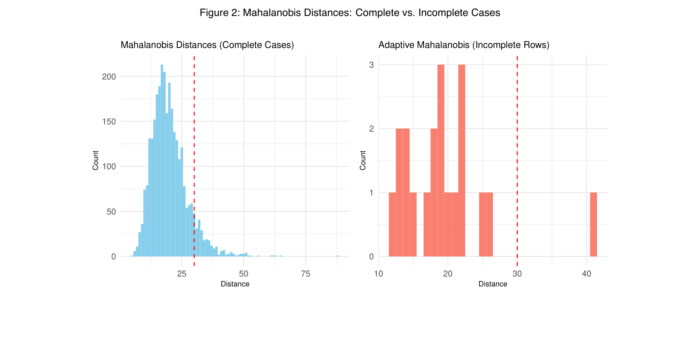
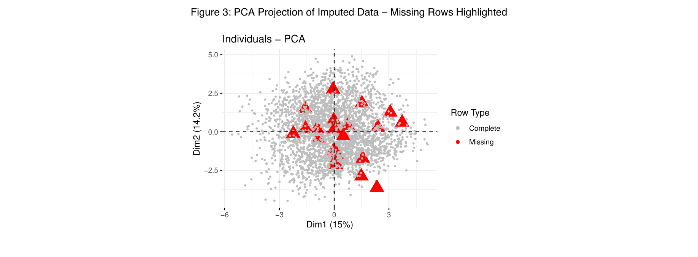
3.3 Exploratory Data Analysis
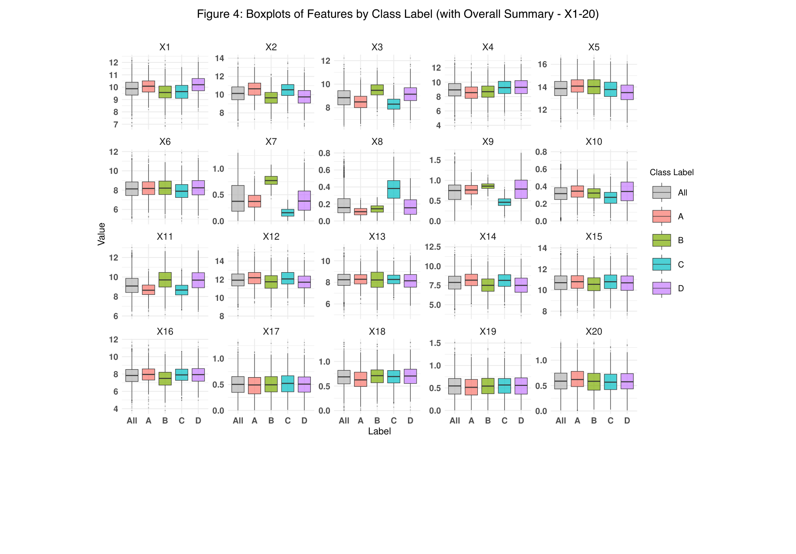
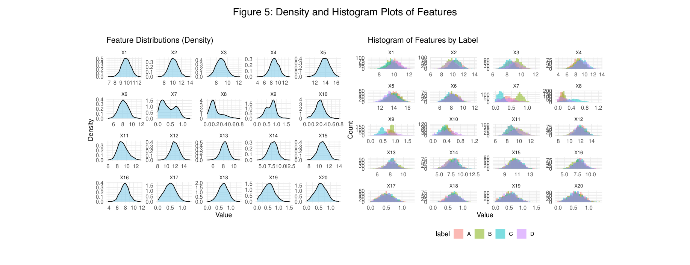
Figure 4 presents boxplots for all 20 numeric features grouped by class, providing an overview of spread, skew, and outlier presence. Variables like X2, X4, X6, X11, and X14 showed long-tailed distributions, suggesting biological heterogeneity and the need for scaling. X8 stood out with extreme skew and over 200 outliers, prompting a log transformation.
Features such as X3 and X11 showed clear class separation, indicating high predictive value, whereas X5, X15, and X17–X20 showed limited variability or overlap between classes, suggesting low discriminative potential.
To deepen the analysis, Figure 5 uses kernel density plots and class-specific histograms. These reveal subtler patterns such as modality, skewness, and label-driven structure not always visible in boxplots. For example, X7’s bimodality resolved into distinct class-based peaks, while X9 showed potential secondary clustering.
X8 and X10 were heavily right-skewed with dense clusters near zero, reinforcing the need for transformation. In contrast, X17–X20 displayed minimal variation and overlap across all classes, consistent with normalised or derived features. These visual cues guided feature preprocessing and selection for PCA and model input.
Table 1 summarises the key findings and implications.
Table 1. Distribution Characteristics and Preprocessing Implications
| Feature | Shape / Notes | Skewness | Implications |
|---|---|---|---|
| X8 | Strong right-skew, long tail | 1.537 | Definitely consider log transformation |
| X11 | Slightly asymmetrical | 0.406 | Slight positive skew |
| X10 | Extremely peaked (kurtotic), right-skewed | 0.373 | Could distort models; transformation recommended |
| X7 | Bimodal | 0.346 | Very interesting - could suggest latent classes or label structure |
| X19 | Light skew | 0.180 | Manageable, especially if scaled |
| X17 | Left-skewed | 0.147 | Possibly bounded or clipped; watch for floor effects |
| X4 | Slightly right-skewed | -0.042 | Might consider transformation if needed for sensitivity |
| X9 | Bimodal and skewed | -0.009 | Worth isolating by label – could indicate hidden structure |
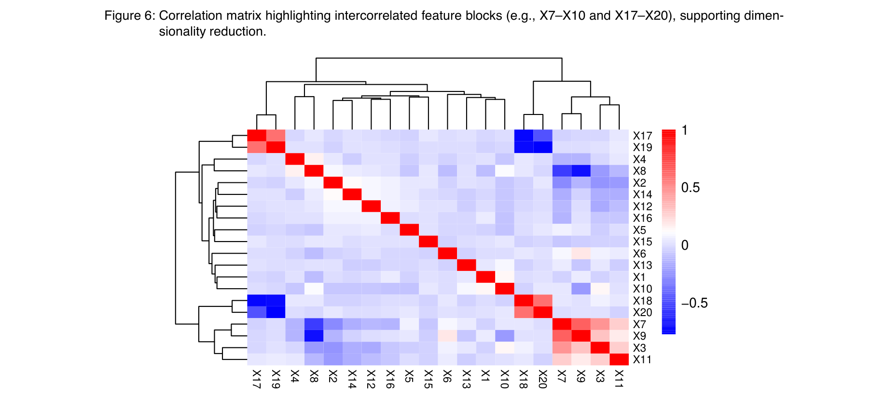
Prior to dimensionality reduction, a correlation matrix (Figure 6) with hierarchical clustering was inspected to identify feature clusters with high intercorrelation. This confirmed correlated blocks, most notably between X7–X10 and X17–X20. This visual inspection was followed by formal multicollinearity analysis using Variance Inflation Factors (VIF). While no VIFs exceeded the conventional threshold of 5, moderate inflation (VIFs of 2–3.6) was observed among X7–X10 and X17–X20, supporting the case for PCA to reduce redundancy and improve generalisation - particularly for linear models.
3.4 Principal Component Analysis (PCA)
To explore the underlying structure of the data, PCA was applied to the training set only, and the test set was projected into the resulting PCA space to avoid data leakage. A scree plot and parallel analysis (Figure 7, Figure 8) were used to determine the optimal number of components to retain. The elbow method identifies the point where adding more components yields diminishing returns in explained variance. Parallel analysis compares eigenvalues from real data to those from randomly generated data, retaining only components that exceed random expectations. Both methods suggested that approximately 4–5 components captured the majority of the variance. The scree plot (Figure 7 and 8) revealed a distinct elbow after the fourth component, while parallel analysis supported retention of up to 12 components, capturing ~82% of the total variance. Five components were selected to capture ~48% of the variance for interpretability-focused analysis, while twelve components (~82%) were retained for classifier input to preserve greater variance without excessive dimensionality. The PC1 vs PC2 scatter plot (Figure 8, right) shows partial label separation, supporting the presence of underlying structure captured by PCA. Based on this, five principal components were retained, consistent with the Kaiser criterion (eigenvalues > 1) and visual 'elbow' method. This decision balances information retention with parsimony and ensures that the retained dimensions reflect meaningful variance in the dataset.
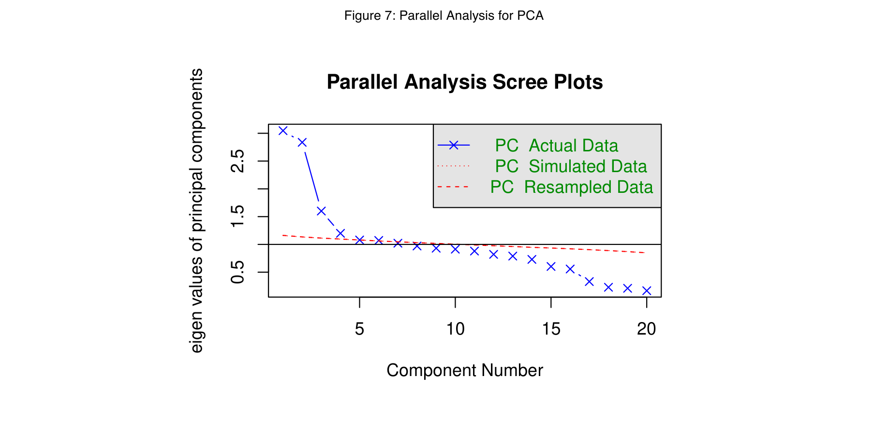
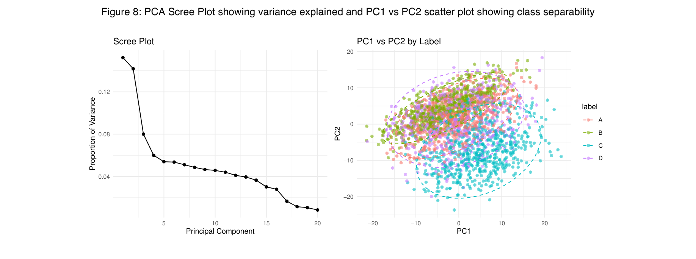
Varimax-Rotated Component Interpretation
To aid interpretability, an orthogonal varimax rotation was applied to the 5 retained principal components. This redistributes variance to create a simpler loading structure. Overall variance remains the same, but varimax aligns features more closely with the original features (X1-20) where each feature loads more strongly on just one component - while preserving the overall explained variance. The rotated loadings (Figure 9) highlighted clearer latent groupings, with components aligning more distinctly with correlated feature blocks (e.g., X7–X10, X17–X20). Rotation was applied only to the top 5 components to maximise interpretability without compromising the variance-ranked structure. The full set of 12 unrotated components was used for classification tasks to retain the strict variance ordering essential for modelling performance.
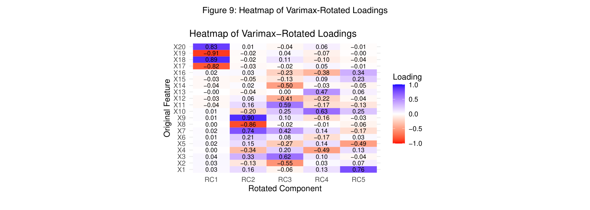
Figure 9 shows a heatmap of varimax-rotated PCA loadings (top 5 components), improving interpretability by aligning each component with a distinct set of original features. Rotation highlighted coherent latent groupings - such as a contrast between X17–X20, a tightly correlated X7–X9–X8 cluster, and smaller mixed components - suggesting structured biological variation across the feature set. These interpretations supported the decision to retain five principal components for interpretability-focused analyses, while using all 12 for classification.
3.5 Model Preparation and Training
Prior to modeling, highly skewed features (X8 & X10) were log-transformed using log1p() to stabilise variance and reduce the influence of outliers, while preserving any zero values. All numeric variables were then standardised using scale() (mean = 0, SD = 1) to ensure fair contribution in distance - and variance-based methods such as PCA and SVM. This preprocessing improved numerical stability and model interpretability. Four classifiers were trained using stratified 80/20 splits:
- Logistic Regression (multinomial, baseline)
- Random Forest (ensemble, robust to collinearity & resistant to noise)
- Support Vector Machine (RBF kernel, non-linear boundaries)
- Naïve Bayes (probabilistic baseline).
Each model was evaluated on three feature strategies: full features, PCA (top 5), and PCA (top 12). Performance was assessed via misclassification rate and confusion matrices.
Given the multicollinearity, outliers, and partial separability observed during EDA and PCA, these four models offer a range of interpretability, complexity, and assumptions, allowing a robust comparison. Random Forest was chosen for its resilience to noise and multicollinearity, while Logistic Regression offers a simple linear baseline. SVM can handle non-linear boundaries, and Naïve Bayes adds a probabilistic perspective.
3.6 Bootstrapped Simulation
To evaluate model stability and generalisability, stratified bootstrapping was used to generate a simulated dataset that preserved original class proportions and feature distributions by sampling with replacement within class groups. PCA was applied only to the training set to prevent data leakage, and the test set was projected using derived loadings-ensuring a valid evaluation pipeline. Histogram and PCA-cluster comparisons confirmed that the simulated data retained comparable variance and feature structure, with class-wise mean and variance differences remaining below 6.5%. This validated the simulation as a robust testbed for assessing the effects of dimensionality reduction, model complexity, and class structure on classifier performance. All random sampling procedures, including bootstrapping, stratified splitting, and clustering initialisation, were made reproducible using set.seed(123).
3.7 Unsupervised Learning
To explore latent structure without supervision:
K-Means Clustering: Elbow method supported k = 4. Clusters were visualised in PCA space and compared against true labels (Figure 10).
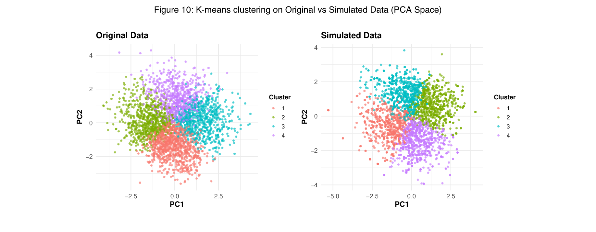
3.8 Hierarchical Clustering
Hierarchical Clustering: Ward’s method (specifically ward.D2) was applied to scaled handpicked features to create compact, spherical clusters by minimizing total within-cluster variance. This approach complements the PCA-reduced space and is widely used when Euclidean distances are appropriate due to its tendency to minimise within-cluster variance, producing compact, spherical clusters well-suited to Euclidean distance-based PCA-reduced data. Cluster boundaries were visualised with k = 4 cuts on dendrograms, aligned with the known number of classes, in Figure 11 below. Cluster-label concordance tables were also produced to examine alignment.
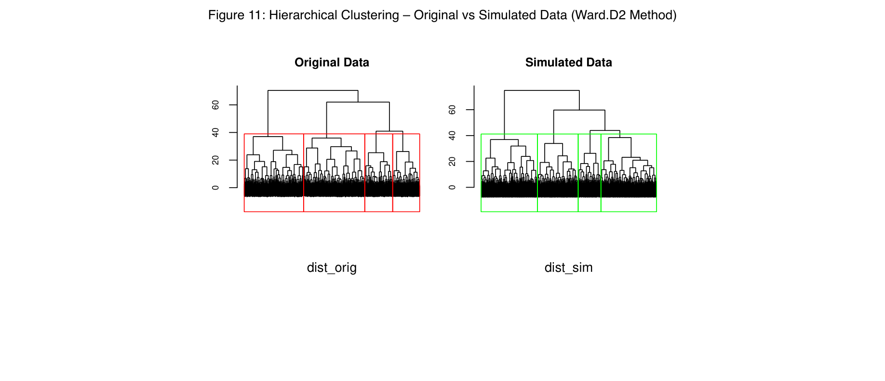
4. Results
4.1 Classification Performance
Supervised models were evaluated across three feature strategies: all original features, top 5 PCA components, and top 12 PCA components. Performance was assessed using misclassification error on both original and bootstrapped (simulated) datasets. The results are summarised in Table 2 below.
| Model | Features | Error % (Original) | Accuracy % (Original) | Error % (Simulated) | Accuracy % (Simulated) |
|---|---|---|---|---|---|
| Logistic Regression | All | 15 | 85 | 1.8 | 98.2 |
| PCA (5) | 20.2 | 79.8 | 23.1 | 76.9 | |
| PCA (12) | 25.5 | 74.5 | 20.9 | 79.1 | |
| Random Forest | All | 9.3 | 90.7 | 0 | 100 |
| PCA (5) | 19 | 81 | 9.6 | 90.4 | |
| PCA (12) | 20 | 80 | 9 | 91 | |
| SVM | All | 11.8 | 88.2 | 0.5 | 99.5 |
| PCA (5) | 14.5 | 85.5 | 17.4 | 82.6 | |
| PCA (12) | 1 | 99 | 15 | 85 | |
| Naïve Bayes | All | 15.8 | 84.2 | 0.8 | 99.2 |
| PCA (5) | 27.7 | 72.3 | 23.6 | 76.4 | |
| PCA (12) | 2.8 | 97.2 | 22.4 | 77.6 |
Table 2: Classification model performance across feature strategies, original vs. bootstrapped-simulated data. Cell shading follows error rate (green = low, red = high).
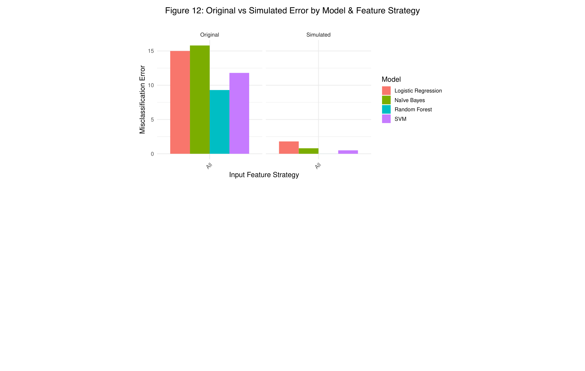
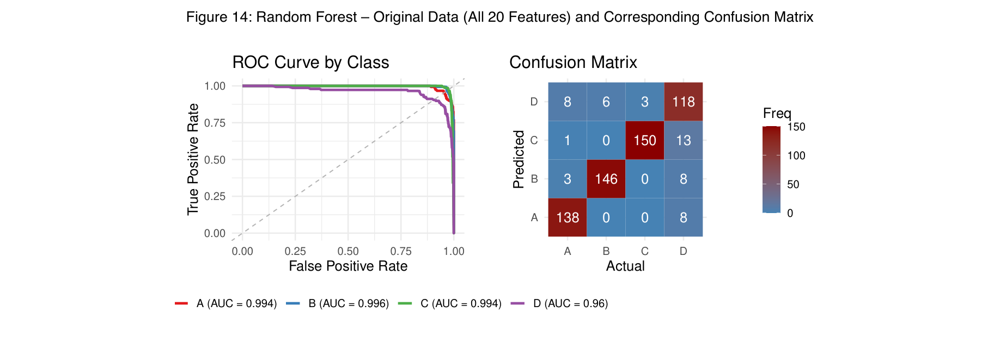
4.2 Key Findings
Supervised Learning
- Random Forest, using all original features, was the most accurate model on real data (9.3% error) and achieved perfect classification (0.0% error) on simulated data.
- SVM and Naïve Bayes significantly improved with PCA, especially using the top 12 principal components, outperforming their full-feature versions.
- PCA improved model performance and stability, particularly for classifiers assuming linearity (Logistic Regression) or feature independence (Naïve Bayes).
- Logistic Regression, while interpretable, underperformed across all versions - but showed excellent simulated accuracy using all features (1.8% error), suggesting sensitivity to noise and multicollinearity.
- Performance trends were consistent across original and simulated datasets, supporting the stability of PCA-based pipelines and the robustness of ensemble methods.
- Handpicked features were deprecated after being outperformed by PCA strategies in every supervised model - highlighting the value of data-driven reduction over manual selection in the case of supervised learning.
Unsupervised Learning
- PCA-12 enabled the most class-aligned clustering, with K-means and HC both producing clusters that clearly corresponded to specific labels, especially Class C.
- PCA-5 provided moderate improvements in separability but less distinct class alignment compared to PCA-12.
- The handpicked feature set no longer outperformed PCA, post a data-leakage issue that was fixed in the PCA pipeline; its clusters were less distinct post-fix, particularly in the simulated dataset.
- These findings reinforce the value of data-driven dimensionality reduction in unsupervised contexts, where meaningful latent groupings can emerge more cleanly from well-structured PCA inputs.
5. Discussion
This analysis assessed the effectiveness and robustness of multiple supervised and unsupervised learning methods across original and bootstrapped datasets. Key insights emerged regarding feature preprocessing, dimensionality reduction, model performance, and generalisability.
5.1 Supervised Model Performance
Notably, Random Forest achieved perfect classification (0% error) on the simulated data. However, this result should be interpreted with caution. The stratified bootstrapping process preserved original class-conditional distributions with minimal added noise, potentially simplifying the classification task. This suggests excellent internal consistency and model capacity, but does not guarantee real-world generalisability - particularly under unseen or noisier distributions. This reinforces the importance of validating ensemble methods against external datasets with more diverse or noisy characteristics.
While misclassification rate was used as the primary evaluation metric, ROC analysis provided additional insight into class-level discrimination. Random Forest demonstrated outstanding and consistent performance across all classes, with AUCs between 0.994–0.996. In contrast, Logistic Regression with PCA-12 achieved high AUCs for classes A–C (≈ 0.984), but performance dropped for Class D (AUC = 0.859), indicating weaker discrimination in that class despite reasonable overall accuracy.
Among all classifiers, Random Forest consistently achieved the lowest error rates, particularly on the original dataset (9.3%) and perfect classification on the simulated dataset (0.0%). Its robustness to multicollinearity and outliers likely contributed to this performance, especially given the highly skewed and heterogeneous feature distributions.
Support Vector Machines (SVM) also performed well, particularly when using the top 12 PCA components, achieving 1.0% error in the original dataset and 15.0% in the simulated. This suggests that non-linear boundaries captured by the RBF kernel aligned well with structure exposed by PCA - though the model still performed best using all features (11.8% error).
Naïve Bayes, while relatively weak on the full feature set (15.8% error), benefited substantially from PCA. When trained on the top 12 components, it achieved 2.8% error on the original data and 22.4% on the simulated, supporting the idea that PCA helps satisfy its assumptions of conditional independence.
Logistic Regression, while interpretable, underperformed relative to the others. It reached 15.0% error with all features, but saw performance degrade on PCA-reduced data (25.5% error with PCA-12 on original data), suggesting limitations when complex class boundaries are projected into lower dimensions.
5.2 Dimensionality Strategy Trade-offs
PCA proved valuable in reducing dimensionality and multicollinearity while preserving performance in many cases. The top 12 components consistently outperformed the top 5, capturing ~82% of variance and likely retaining more class-relevant signal. However, the best results (e.g., Random Forest) were still obtained using the full feature set, suggesting that PCA introduces modest trade-offs between compression and fidelity.
The handpicked feature subset was ultimately deprecated. Despite EDA-driven motivation, it introduced subjectivity and was outperformed by PCA in every supervised model. This reinforces the importance of data-driven feature reduction methods in high-dimensional settings.
5.3 Generalisability and Simulation Insights
Bootstrapping via stratified sampling preserved class balance and distributional structure, allowing for robust testing of model stability. Performance trends on the simulated data mirrored those on the original, affirming the resilience of classification pipelines. Notably, the Random Forest’s 0% error on simulated data implies excellent generalisation when class distributions remain stable-even under resampling.
Despite this, PCA substantially benefited models such as Naïve Bayes and SVM, where assumptions about independence or smooth decision boundaries are often violated in raw high-dimensional data. PCA not only reduced multicollinearity, but may have helped expose latent structure - making these models more stable and effective.
5.4 Unsupervised Learning
Both K-means and hierarchical clustering revealed overlapping but interpretable clusters, particularly when using PCA-reduced inputs. The 12-component PCA version led to the most distinct cluster-to-class mappings, with certain clusters showing near-perfect alignment. For example, in KMeans with PCA-12, Cluster 1 aligns almost entirely with Class C, and Cluster 3 (original) aligns predominantly with Class B, especially in the simulated dataset. In Hierarchical Clustering with PCA-12, Cluster 3 strongly captures Class C, while Cluster 1 tends to mix A and D, suggesting partial separation. This improved separability highlights how higher-dimensional PCA retains meaningful latent structure for clustering, improving class alignment over both handpicked and PCA-5 variants. In contrast, the handpicked feature subset, which previously offered slightly better-defined groupings, now shows less clear structure. Clusters span multiple classes with more dispersion, particularly in the simulated version. This suggests that manual feature curation is less effective than data-driven dimensionality reduction for unsupervised discovery, post-cleaning. Interestingly, while PCA-5 still improves cluster interpretability over raw features, it does not isolate distinct classes as cleanly as PCA-12. This supports the idea that retaining more principal components (~82% variance) improves the ability to uncover latent class structure.
5.5 Limitations
This study has several limitations. First, PCA assumes linearity and may discard non-linear patterns essential for models like Random Forest or SVM. Second, the simulated dataset-while stratified and balanced-may not capture real-world variability or noise, limiting its validity. Third, label-wise mean imputation assumes within-class homogeneity and ignores cross-feature dependencies, which may obscure subtler missingness structures. Finally, clustering via K-means and hierarchical methods relies on geometric assumptions that may misrepresent overlapping or non-convex groupings.
6. Conclusion
Random Forest using all features consistently delivered the lowest error rates, showing resilience to noise, skew, and collinearity. PCA (12 components) significantly improved generalisability for SVM and Naïve Bayes by reducing multicollinearity and aligning better with model assumptions. Bootstrapped simulation preserved class balance and distributional structure, offering a robust validation setting. Label-wise mean imputation supported interpretability with minimal bias. Future work should explore non-linear dimensionality reduction techniques (e.g., Kernel PCA, UMAP), and more advanced imputation strategies to better capture multivariate relationships (e.g., predictive mean matching, missForest). Additional supervised models-such as K-Nearest Neighbours or regularised regressions (Ridge, Lasso)-should be considered to benchmark against SVM and logistic regression. For clustering, density- or graph-based methods (e.g., DBSCAN, spectral clustering) may outperform centroid-based approaches in capturing complex latent structure. Mean Shift Clustering offers a promising alternative, requiring no predefined number of clusters. Cluster evaluation could include formal evaluation using Rand index or similar. Factor Analysis (FA) may outperform PCA in uncovering interpretable latent traits and should be evaluated as a dimensionality reduction technique. Multi-round bootstrapping could be performed to extend to 100+ simulation iterations, creating a distribution of model performance scores and would allow formal CI estimation. The pipeline could also be improved, being converted into modular elements for scalability and ease of use. Finally, external validation could be performed by applying the pipeline to an independent dataset of similar characteristics.
7. References
Auguie, B., 2017. gridExtra: Functions in Grid graphics. Version 2.3. [software] Available at: https://CRAN.R-project.org/package=gridExtra [Accessed 18 May 2025].
Henry, L. and Wickham, H., 2020. purrr: Functional programming tools. Version 0.3.4. [software] Available at: https://CRAN.R-project.org/package=purrr [Accessed 21 May 2025].
Jamshidian, M. and Jalal, S., 2010. Tests of multivariate normality and the detection of outliers. Annual Review of Statistics and Its Application, 61(1), pp.1–16. [online] Available at: https://CRAN.R-project.org/package=MissMech [Accessed 8 May 2025].
Little, R.J.A., 1988. A test of missing completely at random for multivariate data with missing values. Journal of the American Statistical Association, 83(404), pp.1198–1202.
Mahalanobis, P.C., 1936. On the generalised distance in statistics. Proceedings of the National Institute of Sciences of India, 2(1), pp.49–55.
Müller, K. and Wickham, H., 2023. tibble: Simple data frames. Version 3.2.1. [software] Available at: https://CRAN.R-project.org/package=tibble [Accessed 22 May 2025].
Revelle, W., 2023. psych: Procedures for psychological, psychometric, and personality research. Version 2.3.9. [software] Northwestern University. Available at: https://CRAN.R-project.org/package=psych [Accessed 17 May 2025].
Robinson, D., 2017. broom: Convert statistical analysis objects into tidy tibbles. Version 0.5.0. [software] Available at: https://CRAN.R-project.org/package=broom [Accessed 19 May 2025].
Rubin, D.B., 1976. Inference and missing data. Biometrika, 63(3), pp.581–592.
van Buuren, S. and Groothuis-Oudshoorn, K., 2011. mice: Multivariate imputation by chained equations in R. Journal of Statistical Software, 45(3), pp.1–67. [online] Available at: https://www.jstatsoft.org/article/view/v045i03 [Accessed 21 May 2025].
Wickham, H., 2007. Reshaping data with the reshape package. Journal of Statistical Software, 21(12), pp.1–20. [online] Available at: https://www.jstatsoft.org/v21/i12/ [Accessed 20 May 2025].